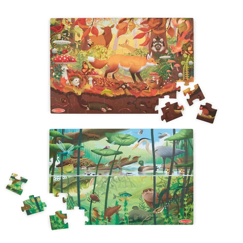
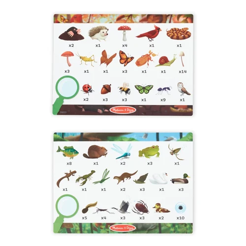
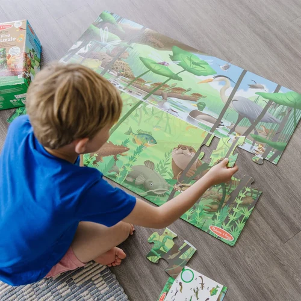
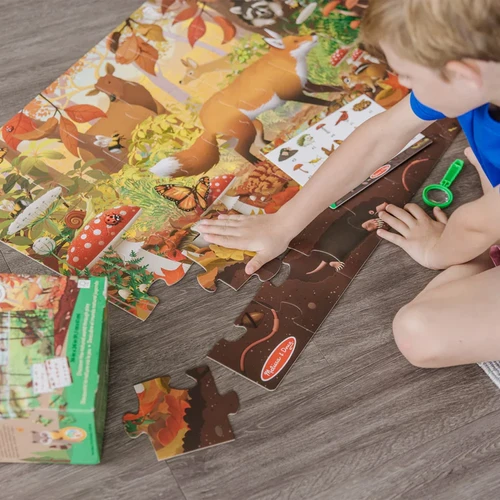
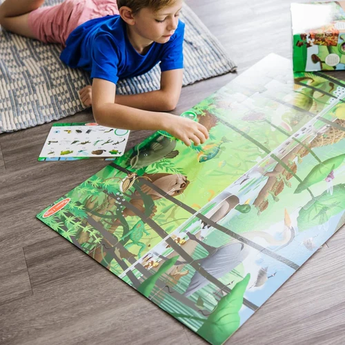
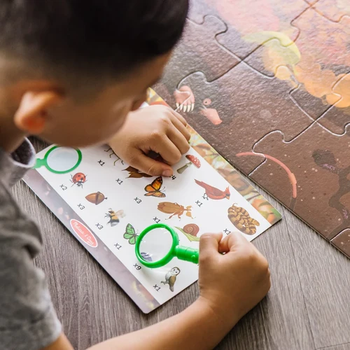
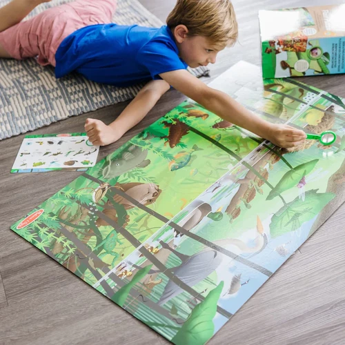

Let’s Explore Seek and Find Fooor Puzzle
Vehicles
R29548-piece double-sided seek-and-find floor puzzle with two different natural habitats to piece together and exploreIncludes 48 jumbo-sized puzzle pieces, double-sided card with reference pictures and plant and critter identification lists, double-sided seek-and-find card, magnifier, collectible medallionOne side of the puzzle features a forest/underground scene (orange) and the other features a pond/underwater scene (green); approximately 36” x 24” assembledMultiple play and learning opportunities; puzzle play encourages problem-solving and logical thinking, fine motor development, goal-setting, and patienceMakes a great gift for 5- to 9-year-olds, for hands-on, screen-free play
Enquire about this product







Let’s Explore Seek and Find Fooor Puzzle at Kids Corner KZN
Let’s Explore Seek and Find Fooor Puzzle is part of our Vehicles collection. Kids Corner KZN stocks toys for learning, pretend play, creative play, gifting and everyday childhood discovery in South Africa.
Browse more Vehicles toys